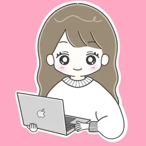

売る人と買う人に、分かれない
向かい合って説得するのではなく、最後まで「相手の困りごとを一緒に解く人」でいる。そう決めておくと、売り込む言葉になりにくくなります。
前半は、みんなの営業の悩みと「やってみてよかった」を持ち寄る時間。後半は、ストレングスファインダーで「自分が力を出しやすい営業」を考える時間でした。話に出たことを、あとで読み返せる形にまとめました。

共催：ますまるさん × おけもん
前半 みんなの経験から
「売り込むのが苦手」「値段をいつ出せばいいか迷う」「何から始めたらいいか分からない」。そんな声から始まって、経験のある人の工夫がたくさん出てきました。
向かい合って説得するのではなく、最後まで「相手の困りごとを一緒に解く人」でいる。そう決めておくと、売り込む言葉になりにくくなります。
値段に反応があった時は、金額だけが理由とは限りません。時期なのか、情報が足りないのか、提案する人への不安なのか。どこで迷っているかを確かめると、次に話すことが見えてきます。
「ドリルが欲しいんじゃなくて、穴を開けたい」。商品や作業ではなく、頼んだ先にある結果を伝えます。
例：結婚式なら「親に感謝を伝えたい」「親にも喜んでほしい」という願いが、費用を超える価値になることも。
「長く働ける職場がいい」の理由が、前の職場の人間関係なのか、子どもが生まれるから安定がほしいのか。理由まで聞くと、合う提案がまったく変わります。
「原宿に行けるパジャマ」。寝心地だけでなく、そのまま外に出られる場面まで見えると、2万円でも欲しくなる。商品より「使う人の場面」を伝える言葉の力が話題になりました。
自分から声をかけるか、SNSなどで見つけてもらうかは、相手とまだ知られているかどうかで決まります。「〇〇といえば、あの人」と思い出してもらえる立ち位置づくりも大事です。
これまで頼んでくれた人は、なぜ自分を選んだのか。文章の雰囲気や人柄が決め手だったのかもしれません。広く受けるか、テーマを絞るかを決める手がかりになります。
営業に正解はひとつではありません。AIに慣れた人が多い場とそうでない場では、同じ話でも反応が違います。「今日はニーズを聞きに行く」など目的を決めて、いろいろな場で試してみましょう。
後半 ストレングスファインダー

高ければいい、というものではありません。営業で活きる場面と、使いすぎた時の落とし穴をセットで。
一人ひとりの違いが自然に目に入る。相手に合わせて、話し方も提案も変えられる。お土産選びに時間がかかるのも、この資質らしさ。
気をつけどころ：「みんな同じに」を求める場では、窮屈に感じやすい。
広く浅くより、信頼できる人と深く。気に入ってもらった先で、人から人へ仕事がつながっていく。
気をつけどころ：相談に時間をかけすぎたり、無料で引き受けすぎたり。
場の空気や対立に敏感で、ぶつからない道を探せる。相手に合わせたデザインや提案ができる。
気をつけどころ：ギスギスした場では、ぐったり疲れやすい。
動く前にリスクを考える。お店探しなら駐車場・臨時休業・子どもが入れるかまで確かめる。その準備が、周りの安心になる。
気をつけどころ：代わりの案を考えてからでないと、なかなか動き出せないことも。
決めたことをやり切るまで走れる。数をこなすことで、成果につなげていける。
気をつけどころ：休むタイミングを逃しがち。区切りの点や、周りからの一言が助けになる。
考えるより先に動く。動きながら考える。「今すぐやりや」のスピード感。
気をつけどころ：準備が後回しになりやすい。慎重さが高い人と組むと心強い。
もっと良くできる所を考え続けられる。質の高い制作物や提案が、そのまま営業になる。
気をつけどころ：終わりが見えず、時間をかけすぎることも。「60〜70点で次に進める」も立派な強み。
「これはいい」と信じたものを、迷わず進められる。その確信が、提案を後押しする。
気をつけどころ：人の意見を聞きそびれないように。
順位や比べることが燃料になる人も。一方で、低い人が「勝ちたい」を感じないわけではありません。
気をつけどころ：比べるのがしんどい人は、無理に使わず「自分が乗っている時」を探すのが近道。
「こうなったら面白そう」をずっと考えている。かなえたい姿から逆算して、今やることを決められる。
気をつけどころ：今の足もとや、過去の学びも一緒に見ると心強い。
学ぶこと自体がうれしい。新しい道具や考え方を、どんどん吸収していける。
気をつけどころ：学んで満足して、実践や成果まで届かないことも。
いろんな人を仲間に入れたい。ご飯に行くと、誰かを連れてくることも。輪を広げる力が人を呼ぶ。
気をつけどころ：相手の都合も、ひと声確かめてから。
持ち帰りワーク

今日シェアした資料
次回
この会は月1回ペースで開いていく予定です。「成約が取れた！」「新しいつながりができた！」という報告、楽しみにしています。次回の日程は決まったらお知らせします。